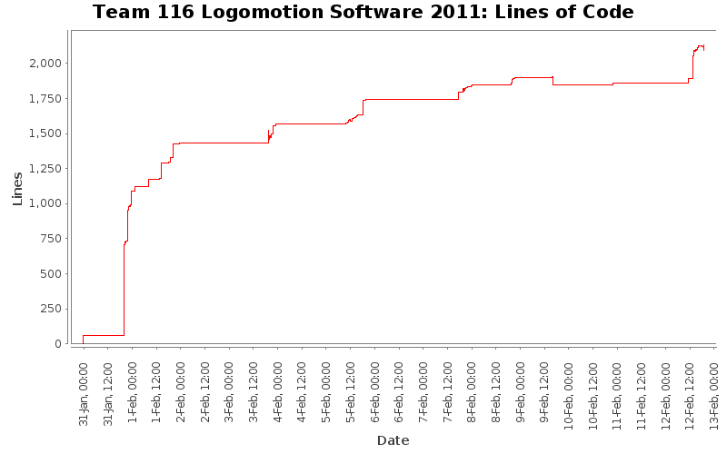

[root]

| Author | Changes | Lines of Code | Lines per Change |
|---|---|---|---|
| Totals | 273 (100.0%) | 3591 (100.0%) | 13.1 |
| kunals | 168 (61.5%) | 1763 (49.1%) | 10.4 |
| spencera | 45 (16.5%) | 1007 (28.0%) | 22.3 |
| dominicn | 13 (4.8%) | 249 (6.9%) | 19.1 |
| alicem | 9 (3.3%) | 234 (6.5%) | 26.0 |
| fionag | 15 (5.5%) | 145 (4.0%) | 9.6 |
| justina | 13 (4.8%) | 74 (2.1%) | 5.6 |
| manderson | 1 (0.4%) | 62 (1.7%) | 62.0 |
| jayanthp | 6 (2.2%) | 26 (0.7%) | 4.3 |
| jeffreyl | 2 (0.7%) | 21 (0.6%) | 10.5 |
| anthonyn | 1 (0.4%) | 10 (0.3%) | 10.0 |
Made DS::process() public and added DS::process() call to Robot::TeleopContinuous()
I don't know if this will work. We'll have to test this on the robot.
7 lines of code changed in 2 files:
Removed extra logging code that didn't go with the function it was in, and was causing a compile error
0 lines of code changed in 1 file:
Clarified a few comments and converted tabs to spaces.
330 lines of code changed in 15 files:
Rewrote portions of Driver Station code and added DS::process() and DS::process_mobility() for when we eventually add the tasking code.
143 lines of code changed in 2 files:
Changed Autonomous declaration to match Hardware Pinout update
12 lines of code changed in 2 files:
Fixed other build errors in Mobility and Navigation
11 lines of code changed in 3 files:
Still needs to be fixed, but it compiles
2 lines of code changed in 1 file:
blahdeeblah I hate committing
41 lines of code changed in 3 files:
Added scale factors for SUCK_SPIT and ROTATE speeds in EndEffector.
2 lines of code changed in 1 file:
made changes and updates to access gear changer and added the goto_point_relative command
9 lines of code changed in 3 files:
Added
AUTO_LANE_SELECTOR_CHANNEL
ANALOG1_SLOT
DigitalImput automous_lane_selector
to Automous and defined
const UINT32 AUTO_LANE_SELECTOR_CHANNEL = 3;
in IO
3 lines of code changed in 2 files:
8 lines of code changed in 1 file:
derp
2 lines of code changed in 1 file:
added a canJaguar to access
1 lines of code changed in 1 file:
added buttons and LEDs to the IO and got rid of a todo on DS
10 lines of code changed in 2 files:
added the drive_straight command
8 lines of code changed in 1 file:
Added warning message to Elevator
1 lines of code changed in 1 file:
Added Mobility::get_motor_controller_instance() because Navigation wants to count wheel ticks
14 lines of code changed in 2 files:
Added newline to end of EndEffector.cpp so it wouldn't throw a warning
1 lines of code changed in 1 file:
Added Mobility::is_in_low_gear() so we can tell what gear we are in.
9 lines of code changed in 2 files:
Fixed the braket and naming error in EndEffector
2 lines of code changed in 1 file:
Fix the compling errors in EndEffector::spin_rollers
14 lines of code changed in 1 file:
Added constant for gear change speed (in percent velocity) to Mobility.
6 lines of code changed in 1 file:
Fixed build errors in MinibotDeployment
18 lines of code changed in 4 files:
Adjust psedo code to at least compile
17 lines of code changed in 2 files:
Grabber looks like it should work, but it would be nice if someone could look over it
11 lines of code changed in 1 file:
added error message in minibotdeployment
1 lines of code changed in 1 file:
Fixed misspelling of allignment to alignment
7 lines of code changed in 1 file:
Added drive straight function to Navigation.cpp
14 lines of code changed in 1 file:
fixxed minibot deployment: added new piston and kunal spellcheck the word allignment again...
10 lines of code changed in 1 file:
Fixed a few build errors and spelling mistakes. Added correct channels for the other two minibot solenoids.
8 lines of code changed in 3 files:
added second piston, other two solenoids for minibot deployment and im giong to use the word fixxed just to add to the statistics
32 lines of code changed in 3 files:
Changed minibot deployment solenoids to a Piston instance
4 lines of code changed in 2 files:
Added Autonomous header file containing Autonomous constructor
42 lines of code changed in 1 file:
Added Autonomous declaration. Note, no autonomous code is present yet.
11 lines of code changed in 1 file:
Added some logging statements
16 lines of code changed in 7 files:
Fixed declaration of MAXIMUM_DEBUG_LEVEL
1 lines of code changed in 1 file:
Added comments and debug level checking to Log::write()
21 lines of code changed in 2 files:
Added a logging class for logging important information, warnings, and errors.
97 lines of code changed in 13 files:
Added some logging code to Mobility
7 lines of code changed in 3 files:
(84 more)